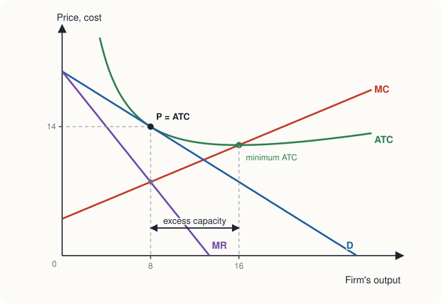
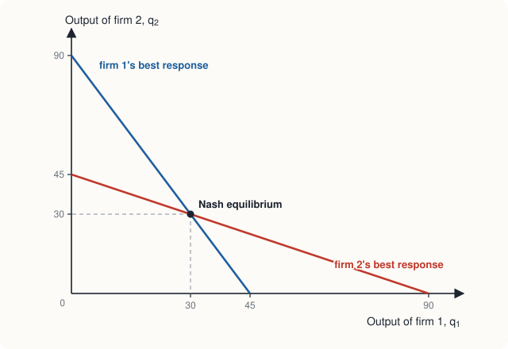

Chapter 10: Monopolistic Competition and Oligopoly¶
Markets between the extremes, and the game theory that explains rivalry
Learning outcomes
After studying this chapter you should be able to:
- Place a market on the spectrum from perfect competition to monopoly, using the number of firms, product differentiation and barriers to entry.
- Explain the short-run and long-run equilibrium of a monopolistically competitive firm, and the idea of excess capacity.
- Describe oligopoly and explain why the decisions of oligopolists are interdependent.
- Represent a game in a payoff matrix and find dominant strategies and Nash equilibria.
- Explain the prisoner's dilemma and use it to show why cartels are unstable.
- Find the Cournot equilibrium of a simple duopoly and compare it with monopoly and competition.
10.1 Between competition and monopoly¶
Perfect competition and monopoly are the two ends of a spectrum. Most real markets lie in between: there are several or many sellers, but each has some power over its price, because its product differs from its rivals' or because there are few rivals. Economists distinguish two intermediate structures.
| Perfect competition | Monopolistic competition | Oligopoly | Monopoly | |
|---|---|---|---|---|
| Number of sellers | very many | many | a few | one |
| Product | identical | differentiated | identical or differentiated | unique |
| Entry and exit | free | free | difficult | blocked |
| Control over price | none | some | considerable, but depends on rivals | considerable |
| Examples | many farm products | restaurants, salons, clothing brands | telecom services, cement, aircraft | a local water supplier |
Table 10.1. Four market structures.
One simple measure of how many firms really compete is the concentration ratio: the share of industry sales of the largest few firms (often four). A four-firm concentration ratio close to 100 per cent indicates oligopoly; a low ratio indicates a competitive or monopolistically competitive industry.
10.2 Monopolistic competition¶
The term was introduced in the 1930s by Edward Chamberlin; Joan Robinson developed a similar theory of "imperfect competition" at the same time. A market is monopolistically competitive when:
- there are many sellers;
- each sells a differentiated product: similar to its rivals' but not identical, so that some buyers prefer it;
- there is free entry and exit in the long run.
Restaurants in a city are a good example. Each offers a somewhat different menu, location, atmosphere and service, so each has some loyal customers and can raise its price a little without losing them all. But there are many close substitutes, and anyone can open a new restaurant. The same is true of hair salons, clothing brands, bakeries, coaching classes and many small retail shops.
Products can be differentiated by physical features (taste, design, quality), location (the nearest shop is more convenient), service (speed, friendliness, after-sales support) and image, which advertising and branding help to create.
The short run¶
Because its product is differentiated, a monopolistically competitive firm faces a downward-sloping demand curve, though a fairly elastic one, since close substitutes exist. In the short run it behaves exactly like a monopolist: it produces where \(MR = MC\) and charges the price on its demand curve. If demand is strong it earns an economic profit; if weak, a loss.
The long run¶
The difference from monopoly appears in the long run. If firms earn profits, new firms enter with their own varieties. Each existing firm loses some customers to the newcomers, so its demand curve shifts left (and becomes more elastic). Entry continues until economic profit is zero. If firms make losses, some exit, and the demand curves of those remaining shift right. In long-run equilibrium:
- each firm produces where \(MR = MC\) (it maximises profit), and
- price equals average total cost (profit is zero), so the demand curve is tangent to the ATC curve.
Example 10.1 Long-run equilibrium
A restaurant's average total cost is \(ATC = 64/Q + 4 + Q/4\) (in hundreds of rupees per meal, with \(Q\) in meals per hour), so its marginal cost is \(MC = 4 + Q/2\). After entry has run its course, its demand is \(P = 20 - 0.75Q\). Show that it is in long-run equilibrium at \(Q = 8\).
Solution. Marginal revenue is \(MR = 20 - 1.5Q\). At \(Q = 8\): \(MR = 20 - 12 = 8\) and \(MC = 4 + 4 = 8\), so \(MR = MC\): the restaurant maximises profit. The price is \(P = 20 - 6 = 14\), and \(ATC = 64/8 + 4 + 8/4 = 8 + 4 + 2 = 14\). Price equals average cost, so economic profit is zero. Both conditions hold.
The lowest point of ATC is at \(Q = 16\), where \(ATC = 4 + 4 + 4 = 12\). The restaurant produces only 8 meals an hour, half its efficient scale, at a cost of 14 instead of 12.

Is monopolistic competition efficient?¶
Compared with perfect competition, two differences stand out.
- Excess capacity. Because the demand curve slopes down, it can touch the U-shaped ATC curve only on its falling part, to the left of the minimum. Each firm produces less than the output that minimises average cost; productive efficiency fails. This is why many restaurants are half-empty at most hours and many petrol pumps or shops could serve more customers at little extra cost.
- Markup over marginal cost. Price is above marginal cost (14 against 8 in the example), so allocative efficiency fails too, and there is a deadweight loss.
But there is a benefit that the model of perfect competition leaves out: variety. Consumers value having many kinds of restaurants, clothes and books to choose from, and excess capacity is in part the cost of that variety. Economists do not agree on whether monopolistically competitive markets provide too much variety or too little, and in practice governments rarely regulate them.
Advertising¶
Firms in monopolistic competition (and in oligopoly) spend heavily on advertising and branding. Critics argue that much advertising tries to create differences in buyers' minds between essentially similar products, raising prices and costs. Defenders argue that advertising informs buyers about prices, new products and the location of shops, which makes markets more competitive, and that a costly advertising campaign is a signal of quality: a firm would not spend heavily to attract buyers to a product they would not buy again. Both effects are found in practice.
10.3 Oligopoly¶
An oligopoly is a market dominated by a few large firms. Entry is difficult, usually because of economies of scale, high fixed costs, control of key inputs, patents or licences. The product may be identical (cement, steel) or differentiated (cars, smartphones, airline services). A market with exactly two firms is a duopoly.
The defining feature of oligopoly is interdependence. Because there are few firms, each one's decisions noticeably affect the others. When one airline cuts fares on a route, its rivals lose passengers and must decide whether to respond. So each firm, in choosing its price, output or advertising, must think about how its rivals will react. A competitive firm or a monopolist need not do this; an oligopolist must.
This makes oligopoly harder to analyse than the other structures. There is no single model of oligopoly; the outcome depends on whether firms compete on price or quantity, whether they choose at the same time or in turn, and whether they can cooperate. The tool for thinking about all of these is game theory.
10.4 Game theory¶
Game theory studies strategic situations: situations in which the outcome for each participant depends on the choices of others. It was developed by John von Neumann and Oskar Morgenstern in the 1940s; John Nash, in the early 1950s, introduced the idea of equilibrium that bears his name. A game has three elements:
- players: the decision-makers (here, firms);
- strategies: the options open to each player;
- payoffs: what each player gets for each combination of strategies (here, profits).
A game in which the players choose at the same time can be written as a payoff matrix.
A pricing game¶
Two firms, Alpha and Beta, are the only sellers of a product. Each can set a high price or a low price. Their monthly profits, in lakh rupees, are shown below; the first number in each cell is Alpha's profit, the second Beta's.
| Beta: high price | Beta: low price | |
|---|---|---|
| Alpha: high price | 10, 10 | 4, 14 |
| Alpha: low price | 14, 4 | 6, 6 |
Table 10.2. A pricing game (profits in lakh rupees: Alpha, Beta).
If both charge high prices, they share the market at a good margin and earn 10 each. If one charges low while the other charges high, the low-price firm wins most customers and earns 14, while the high-price firm earns only 4. If both charge low prices, they share the market at a thin margin and earn 6 each.
Dominant strategies¶
A dominant strategy is a strategy that gives a player a higher payoff whatever the other player does. Consider Alpha's reasoning.
- If Beta charges high, Alpha earns 10 with high and 14 with low: low is better.
- If Beta charges low, Alpha earns 4 with high and 6 with low: low is better.
So charging a low price is Alpha's dominant strategy. The game is symmetric, so low is Beta's dominant strategy too. Both charge low prices and each earns 6.
Nash equilibrium¶
A Nash equilibrium is a combination of strategies in which each player's strategy is the best response to the strategies of the others, so that no player can gain by changing its own strategy alone. In the pricing game, (low, low) is a Nash equilibrium: if Beta charges low, Alpha's best response is low, and vice versa. (High, high) is not: if Beta charges high, Alpha would gain by switching to low.
Not every game has dominant strategies, but many games without them still have Nash equilibria, sometimes more than one. Consider two firms choosing a technical standard for a new device, where each gains only if they choose the same standard:
| Firm 2: standard A | Firm 2: standard B | |
|---|---|---|
| Firm 1: standard A | 5, 5 | 0, 0 |
| Firm 1: standard B | 0, 0 | 3, 3 |
Table 10.3. A coordination game.
Neither firm has a dominant strategy: the best choice depends on what the other does. Both (A, A) and (B, B) are Nash equilibria. Which one occurs depends on history, expectations or communication; the firms might even get stuck on the worse standard B if each expects the other to choose it.
Key idea
A dominant strategy is best whatever others do. A Nash equilibrium is a set of strategies in which each is the best response to the others. If every player has a dominant strategy, playing them is a Nash equilibrium; but a Nash equilibrium does not require dominant strategies.
10.5 The prisoner's dilemma and cartels¶
The pricing game has a striking feature. Each firm, acting in its own interest, charges a low price, and each ends up with 6. If both had charged high prices, each would have had 10. Individually rational choices lead to an outcome that is worse for both. A game with this structure is called a prisoner's dilemma, after the story usually told to illustrate it.
Two suspects are arrested and questioned separately. If both stay silent, the police can convict each only of a minor offence: 1 year in prison each. If one confesses and the other stays silent, the one who confesses goes free and the silent one gets 10 years. If both confess, each gets 5 years. Whatever the other does, confessing reduces one's own sentence (0 instead of 1, or 5 instead of 10), so both confess and each serves 5 years, although both staying silent would have given each only 1.
The prisoner's dilemma appears wherever individual incentives work against a shared interest: firms competing in advertising, countries in arms races, fishing fleets over-fishing a common sea (Chapter 12), and nations deciding whether to cut pollution.
Collusion and cartels¶
The firms in the pricing game would like to escape the dilemma by agreeing to charge high prices. An agreement among firms to restrict output or fix prices is called collusion, and a formal group of colluding firms is a cartel. A successful cartel acts like a single monopolist and shares the monopoly profit among its members. The best-known international example is the Organization of the Petroleum Exporting Countries (OPEC), whose members have at times agreed on limits to their oil output.
But the prisoner's dilemma shows why cartels are unstable. Once the others are charging a high price, each member gains by secretly undercutting it or producing more than its quota. If all members reason this way, the cartel collapses. Cartels have historically found it hard to hold together, especially when they have many members, when cheating is hard to detect, and when demand is falling.
Collusion is also, in most countries, illegal. Competition laws (Chapter 9) prohibit agreements to fix prices, limit output or divide markets, and competition authorities impose heavy penalties on firms caught in such agreements.
Repeated games¶
The pricing game above is played once. Real firms meet again and again, month after month. In a repeated game, cooperation can be sustained more easily, because a firm that cheats today can be punished tomorrow. A simple strategy called tit-for-tat (cooperate in the first round, then do whatever the rival did in the previous round) rewards cooperation and punishes cheating. When firms expect to interact for a long time and can observe each other's prices, high prices may persist without any explicit agreement. This is called tacit collusion, and it is one reason oligopoly prices are often stable.
10.6 The Cournot model of duopoly¶
Game theory can also be applied when firms choose quantities from a continuous range. The oldest model of this kind is due to Augustin Cournot (1838). Two firms produce an identical good. Each chooses its output, taking the rival's output as given, and the market price is set by total output.
Let market demand be \(P = 120 - Q\), where \(Q = q_1 + q_2\), and let each firm have a constant marginal cost of ₹30 and no fixed cost.
Firm 1's best response. Given \(q_2\), firm 1 faces the "residual" demand \(P = (120 - q_2) - q_1\). Its marginal revenue is \(MR_1 = 120 - q_2 - 2q_1\). Setting \(MR_1 = MC\):
This is firm 1's best-response function (or reaction function): the more firm 2 produces, the less firm 1 wants to produce. By symmetry, \(q_2 = (90 - q_1)/2\).
The Nash equilibrium is where each firm is on its best-response function, so that neither wants to change. With symmetry, \(q_1 = q_2 = q\) and \(q = (90 - q)/2\), which gives \(q = 30\). Total output is 60, the price is \(120 - 60 = 60\), and each firm's profit is \((60 - 30) \times 30 = 900\) rupees.

| Total output | Price (₹) | Total profit (₹) | |
|---|---|---|---|
| Perfect competition (\(P = MC\)) | 90 | 30 | 0 |
| Cournot duopoly | 60 | 60 | 1,800 |
| Monopoly or perfect cartel (\(MR = MC\)) | 45 | 75 | 2,025 |
Table 10.4. Duopoly lies between competition and monopoly.
The duopoly outcome lies between competition and monopoly. Economists have shown that as the number of Cournot firms grows, the outcome moves closer to the competitive one.
Example 10.2 The temptation to cheat
In the duopoly above, the two firms form a cartel and agree to produce the monopoly output, 45, splitting it equally: 22.5 each. Show that each firm has an incentive to cheat.
Solution. Under the agreement, the price is \(120 - 45 = 75\) and each firm earns \((75 - 30) \times 22.5 = 1{,}012.50\) rupees.
Suppose firm 2 keeps to its quota of 22.5. Firm 1's best response is \(q_1 = (90 - 22.5)/2 = 33.75\). Total output is \(56.25\) and the price falls to \(120 - 56.25 = 63.75\). Firm 1 earns \((63.75 - 30) \times 33.75 = 1{,}139.06\) rupees, more than its ₹1,012.50 under the agreement, while firm 2's profit falls to \((63.75 - 30) \times 22.5 = 759.38\) rupees. Cheating pays, which is the prisoner's dilemma again.
Other models of oligopoly¶
- Price competition with identical products (Bertrand). If two firms sell an identical product and compete by setting prices, each can take the whole market by undercutting the other slightly. Undercutting continues until the price equals marginal cost: just two firms can produce the competitive outcome. In practice firms avoid this by differentiating their products or building up capacity limits.
- Leaders and followers. If one firm chooses its output first and the other responds, the leader can gain by committing to a large output (a model due to Heinrich von Stackelberg).
- The kinked demand curve. One explanation of why oligopoly prices are stable assumes that rivals will match a price cut (so a cut gains few customers) but will not match a price rise (so a rise loses many). The firm's demand curve then has a kink at the current price, and the firm has little reason to change the price even when its costs change somewhat.
10.7 Game theory in a program¶
The search for pure-strategy Nash equilibria in a small game, and the Cournot best responses, are easy to program.
def pure_nash(payoffs, rows, cols):
"""payoffs[(r, c)] = (payoff to the row player, payoff to the column player)."""
found = []
for r in rows:
for c in cols:
a, b = payoffs[(r, c)]
best_for_row = all(a >= payoffs[(r2, c)][0] for r2 in rows)
best_for_col = all(b >= payoffs[(r, c2)][1] for c2 in cols)
if best_for_row and best_for_col:
found.append((r, c))
return found
pricing = {("High", "High"): (10, 10), ("High", "Low"): (4, 14),
("Low", "High"): (14, 4), ("Low", "Low"): (6, 6)}
print(pure_nash(pricing, ["High", "Low"], ["High", "Low"]))
standards = {("A", "A"): (5, 5), ("A", "B"): (0, 0),
("B", "A"): (0, 0), ("B", "B"): (3, 3)}
print(pure_nash(standards, ["A", "B"], ["A", "B"]))
# Cournot: P = 120 - Q, MC = 30. Each firm in turn plays its best response.
q1 = q2 = 0.0
for _ in range(40):
q1 = (90 - q2) / 2
q2 = (90 - q1) / 2
print(round(q1, 2), round(q2, 2), round(120 - q1 - q2, 2))
[('Low', 'Low')]
[('A', 'A'), ('B', 'B')]
30.0 30.0 60.0
The last part shows that if each firm repeatedly adjusts its output to the rival's last output, the two outputs converge to the Nash equilibrium of 30 each.
10.8 Summary¶
- Monopolistic competition: many firms, differentiated products, free entry. In the short run a firm behaves like a monopolist; in the long run entry drives profit to zero and the demand curve is tangent to ATC. Firms have excess capacity and price above marginal cost, but consumers gain variety.
- Oligopoly: a few firms, barriers to entry, and interdependence: each firm must consider its rivals' reactions.
- Game theory describes strategic situations by players, strategies and payoffs. A dominant strategy is best whatever others do; a Nash equilibrium is a set of mutual best responses.
- In a prisoner's dilemma, each player's dominant strategy leads to an outcome worse for all than cooperation. It explains why cartels are unstable, although repeated interaction can support cooperation.
- In the Cournot duopoly each firm chooses output as a best response to the other's; the equilibrium output and price lie between competition and monopoly.
- Collusion to fix prices or restrict output is generally prohibited by competition law.
10.9 Exercises¶
Exercise 1
Classify each market as perfect competition, monopolistic competition, oligopoly or monopoly, and give a reason: (a) beauty parlours in a large town; (b) the manufacture of large passenger aircraft; (c) a crop sold by thousands of farmers at a regulated market; (d) the only electricity distributor in a city.
Answer
(a) Monopolistic competition: many sellers, differentiated services, easy entry. (b) Oligopoly: very few firms, huge economies of scale and high barriers. (c) Close to perfect competition: many sellers of a standard product, each a price taker. (d) Monopoly, probably a natural monopoly regulated by the government.
Exercise 2
Why does a monopolistically competitive firm earn zero economic profit in the long run, even though it faces a downward-sloping demand curve?
Answer
Because entry is free. Profits attract new firms with similar products, which take customers away and shift each existing firm's demand curve to the left until it is just tangent to ATC. At that point price equals average cost and economic profit is zero, although the firm still has some control over its price.
Exercise 3
Find any dominant strategies and all pure-strategy Nash equilibria of this advertising game (profits in lakh rupees: Firm A, Firm B).
| B advertises | B does not advertise | |
|---|---|---|
| A advertises | 3, 3 | 8, 1 |
| A does not advertise | 1, 8 | 6, 6 |
Answer
For A: if B advertises, 3 > 1; if B does not, 8 > 6. Advertising is A's dominant strategy, and by symmetry B's. The only Nash equilibrium is (advertise, advertise), with 3 each, although both would earn 6 if neither advertised. It is a prisoner's dilemma.
Exercise 4
In this game, find all pure-strategy Nash equilibria (payoffs: Row, Column).
| Left | Right | |
|---|---|---|
| Up | 4, 2 | 1, 3 |
| Down | 2, 1 | 3, 4 |
Answer
Check each cell. (Up, Left): Column would switch to Right (3 > 2), so no. (Up, Right): Row would switch to Down (3 > 1), so no. (Down, Left): Row would switch to Up (4 > 2), so no. (Down, Right): Row gets 3 versus 1 from Up; Column gets 4 versus 1 from Left; neither wants to switch. The only Nash equilibrium is (Down, Right). Note that Row has no dominant strategy; Column's dominant strategy is Right (3 > 2 and 4 > 1).
Exercise 5
Two Cournot duopolists face demand \(P = 100 - Q\) and each has a marginal cost of ₹10. Find each firm's best-response function, the equilibrium outputs, the price and each firm's profit.
Answer
\(MR_1 = 100 - q_2 - 2q_1 = 10\) gives \(q_1 = (90 - q_2)/2\), and symmetrically for firm 2. In equilibrium \(q = (90 - q)/2\), so \(q_1 = q_2 = 30\). Total output 60, price ₹40. Profit of each \(= (40 - 10) \times 30 =\) ₹900.
Exercise 6
Give two reasons why cartels tend to break down.
Answer
(1) Each member has an incentive to cheat: with the others restricting output, it can raise its own profit by selling more or undercutting the agreed price (the prisoner's dilemma). (2) Cartels are illegal in most countries, so agreements cannot be enforced in court and members risk penalties. Other reasons: cheating is hard to detect when there are many members; falling demand increases the temptation to cut prices; and high prices attract new entrants.
10.10 Quiz¶
Check your understanding of Chapter 10
Exercise 1
Which feature distinguishes monopolistic competition from perfect competition?
- free entry
- many sellers
- differentiated products
- zero long-run economic profit
Answer
differentiated products
Exercise 2
In long-run equilibrium, a monopolistically competitive firm
- produces at minimum average total cost
- earns positive economic profit
- has a demand curve tangent to its ATC curve, with excess capacity
- charges a price equal to marginal cost
Answer
has a demand curve tangent to its ATC curve, with excess capacity
Exercise 3
The key feature of oligopoly is
- that firms are price takers
- that firms' decisions are interdependent
- free entry
- a single seller
Answer
that firms' decisions are interdependent
Exercise 4
A Nash equilibrium is a situation in which
- total payoffs are as large as possible
- each player's strategy is a best response to the others' strategies
- every player has a dominant strategy
- players cooperate
Answer
each player's strategy is a best response to the others' strategies
Exercise 5
In a prisoner's dilemma
- cooperation is the dominant strategy
- the Nash equilibrium is worse for both players than mutual cooperation
- there is no Nash equilibrium
- one player always wins
Answer
the Nash equilibrium is worse for both players than mutual cooperation
Exercise 6
Two Cournot firms face P = 90 − Q and zero costs. How much does each firm produce in equilibrium?
Answer
30
Each firm's best response is q = (90 − other)/2, so q = 30.
Exercise 7
Match each market structure with an example.
| A | B |
|---|---|
| Perfect competition | aircraft manufacture |
| Monopolistic competition | the only water supplier in a town |
| Oligopoly | a farm product sold by thousands of growers |
| Monopoly | restaurants in a city |
Answer
Perfect competition — a farm product sold by thousands of growers; Monopolistic competition — restaurants in a city; Oligopoly — aircraft manufacture; Monopoly — the only water supplier in a town